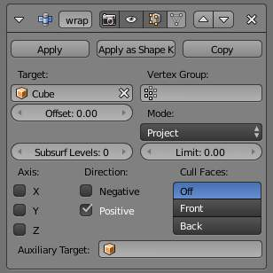
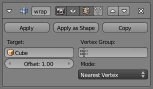

Shrinkwrap Modifier¶
The Shrinkwrap modifier allows an object to “shrink” to the surface of another object. It moves each vertex of the object being modified to the closest position on the surface of the given mesh (using one of the three methods available).
It can be applied to meshes, lattices, curves, surfaces and texts.
Options¶
Nearest Surface Point.
- Target
- Shrink target, the mesh to shrink to/wrap around.
- Vertex Group
- The vertex group to control whether and how much each vertex is displaced to its target position. If a vertex is not a member of this group, it is not displaced (same as weight 0).
- Offset
- The distance that must be kept from the calculated target position, in Blender Units.
- Mode
This drop-down list specifies the method to be used to determine the nearest point on the target’s surface for each vertex of the modified object. Some options will add some extra, specific controls to the panel.
- Nearest Surface Point
- This will select the nearest point over the surface of the shrink target. It adds the extra option Above surface, which always keep the computed vertices above their “floor faces”. This is only meaningful when Offset is not null.
Projection
This will project vertices along a chosen axis until they touch the shrink target. Vertices that never touch the shrink target are left in their original position.
Projection options.
- Subsurf Levels
- This applies a (temporary) Catmull-Clark subsurf to the modified object, before computing the wrap when using Projection mode.
- Limit
- This is a distance limit between original vertex and surface. If the distance is larger than this limit vertex wouldn’t be projected onto the surface,
- X, Y, Z
- Along which local axis of the modified object the projection is done. These options can be combined with each other, yielding a “median axis” of projection.
- Negative, Positive
- This allows you to select the allowed direction(s) of the shrink along the selected axis. With more than one Shrinkwrap modifier, negative and positive axes can be combined.
- Cull Faces
- This allows you to prevent any projection over the “front side” (respectively the “back side”) of the target’s faces. The “side” of a face is determined by its normal (front being the side “from where” the normal “originates”).
- Auxiliary Target
- An additional object to project over.
- Nearest Vertex
This will snap vertices to the nearest vertex of the shrink target. It adds no extra options.
Nearest Vertex options.
See also